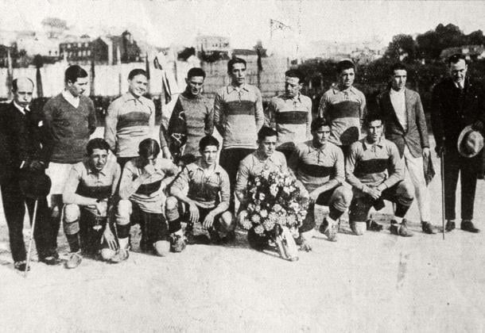

Club Atlético Boca Juniors
1905 Buenos Aires
El Club Atlético Boca Juniors es una institución argentina que posee su sede en el barrio de La Boca, Buenos Aires. Fue fundado el 3 de abril de 1905 y desde el año 1913 participa ininterrumpidamente de la Primera División del fútbol argentino. En el año 2013 se cambió en el único equipo en disputa todas las temporadas en Primera División desde el profesionalismo del fútbol en el año 1931.

El Xeneize posee 34 campeones de Primera División, 11 títulos locales, algo que es récord en nuestro fútbol. A nivel internacional los números son brillantes, ya que goza de la cantidad de 22 títulos oficiales, siendo el club de América que más títulos tiene en su haber. De esas 22 consagraciones, las que más se destacan son las 6 Libertadores (1977, 1978, 2000, 2001, 2003, 2007) y las 3 Intercontinentales (1977 frente a Borussia Mönchengladbachn, 2000 ante el Real Madrid y 2003 contra el AC Milan ). Asimismo, es el club junto a Independiente que tiene más Copa Sudamericana con 2 y es la institución que más Recopa Sudamericanaconserva con 4. Contando todos los títulos obtenidos durante el amateurismo y profesionalismo, Boca es el club más ganador de la Argentina con 69 consagraciones.
Además del fútbol, posee disciplinas importantes como voleibol, donde está una de las instituciones más importantes del país, baloncesto, también de lo más valioso de Argentina, de igual forma futsal, en el cual es el segundo equipo con más títulos (12), y por último fútbol femenino, disciplina en la que ostenta 24 campeonatos. Estos cuatro deportes son los más destacados, debido a que, además del fútbol, se vieron de manera profesional.
El conjunto Azul y Oro hace de local en el Estadio Alberto J. Armando, más conocido popularmente a lo largo y ancho del mundo como La Bombonera. La casa del Xeneize tuvo su apertura el 25 de mayo de 1940, y al día de hoy posee la capacidad de albergar 55,000 espectadores.